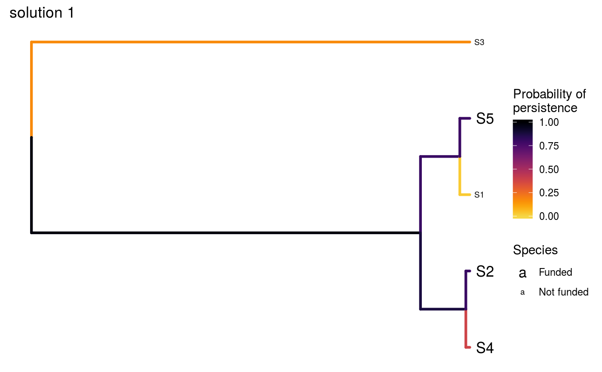
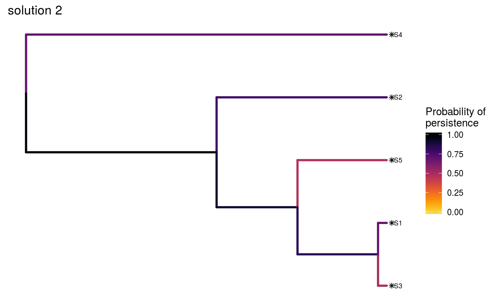
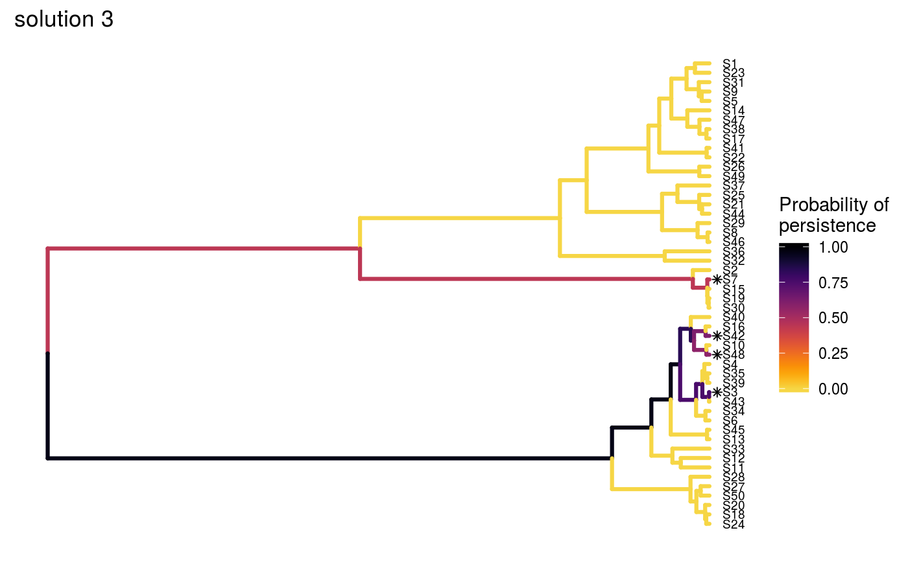

R/ppp_manual_solution.R
ppp_manual_solution.RdManually specify funding schemes for conservation projects under the 'Project Prioritization Protocol' (Joseph, Maloney & Possingham 2009), and evaluate their effectiveness (Faith 2008).
ppp_manual_solution(x, tree, solution, project_column_name, cost_column_name, success_column_name)
| x |
|
|---|---|
| tree |
|
| solution |
|
| project_column_name |
|
| cost_column_name |
|
| success_column_name |
|
A tibble object containing the
solution(s) data. Each row corresponds to a different solution, and
each column describes a different property of the solution. The object
contains a column for each project (based on the argument to
project_column_name) which contains logical values indicating
if the project was prioritized for funded (TRUE) or not
(FALSE) in a given solution. Additionally, the object also contains
the following columns:
"objective"numeric objective value associated with
each of the solution(s). This corresponds to the expected amount of
evolutionary history that is retained by each solution (Faith 2008).
"budget"numeric budget used for generating each of
the of the solution(s).
"cost"numeric total cost associated with each of
of the solution(s).
"optimal"logical indicating if each of the
solution(s) is known to be optimal (TRUE) or not (FALSE.
Missing values (NA) indicate that optimality is unknown
(i.e. because the method used to produce the solution(s) does not
provide any bounds on their quality).
"method"character name of method used to produce the
solution(s).)
Faith DP (2008) Threatened species and the potential loss of phylogenetic diversity: conservation scenarios based on estimated extinction probabilities and phylogenetic risk analysis. Conservation Biology, 22: 1461--1470.
Joseph LN, Maloney RF & Possingham HP (2009) Optimal allocation of resources among threatened species: A project prioritization protocol. Conservation Biology, 23, 328--338.
For other methods for generating solutions for the 'Project
Prioritization Protocol' problem, see ppp_exact_solution,
ppp_heuristic_solution, and
ppp_random_solution. To visualize the effectiveness of a
particular solution, see ppp_plot.
# set seed for reproducibility set.seed(500) # load built-in data data(sim_project_data, sim_tree) # load packages to help with plotting library(ggplot2) # print simulated project data set print(sim_project_data)#> # A tibble: 6 x 10 #> name cost success locked_in locked_out S1 S2 S3 S4 S5 #> <chr> <dbl> <dbl> <lgl> <lgl> <dbl> <dbl> <dbl> <dbl> <dbl> #> 1 S1_project 94.4 0.847 FALSE FALSE 0.802 0 0 0 0 #> 2 S2_project 101. 0.969 FALSE FALSE 0 0.808 0 0 0 #> 3 S3_project 103. 0.732 FALSE TRUE 0 0 0.678 0 0 #> 4 S4_project 99.2 0.979 FALSE FALSE 0 0 0 0.703 0 #> 5 S5_project 99.9 0.714 TRUE FALSE 0 0 0 0 0.657 #> 6 baseline_p~ 0 1 FALSE FALSE 0.293 0.388 0.0120 0.195 0.124# print simulated phylogenetic tree data set print(sim_tree)#> #> Phylogenetic tree with 5 tips and 4 internal nodes. #> #> Tip labels: #> [1] "S3" "S1" "S5" "S2" "S4" #> #> Rooted; includes branch lengths.# plot the simulated phylogeny plot(sim_tree, main = "simulated phylogeny")# now we will create three solutions # first, we will initialize a data.frame with all projects defunded solutions <- as.data.frame(matrix(FALSE, ncol = nrow(sim_project_data), nrow = 3)) names(solutions) <- sim_project_data$name # the first solution will have no projects funded except for the base line # project, so we will make the first value in that column TRUE solutions$baseline_project[1] <- TRUE # the second solution will have all projects funded so we will set those # values to TRUE solutions[2, ] = TRUE # the third solution will have four randomly selected projects funded solutions[3, sample.int(nrow(sim_project_data), 4)] <- TRUE # now we can evaluate the solutions s1 <- ppp_manual_solution(sim_project_data, sim_tree, solutions, "name", "cost", "success") # print the output print(s1)#> # A tibble: 3 x 12 #> solution objective budget cost optimal method S1_project S2_project #> <int> <dbl> <dbl> <dbl> <lgl> <chr> <lgl> <lgl> #> 1 1 1.64 NA 0 NA manual FALSE FALSE #> 2 2 3.85 NA 498. NA manual TRUE TRUE #> 3 3 3.42 NA 300. NA manual FALSE TRUE #> # ... with 4 more variables: S3_project <lgl>, S4_project <lgl>, #> # S5_project <lgl>, baseline_project <lgl># visualize the effectiveness of the different solutions ppp_plot(sim_project_data, sim_tree, s1, "name", "cost", "success", n = 1) + ggtitle("solution 1")